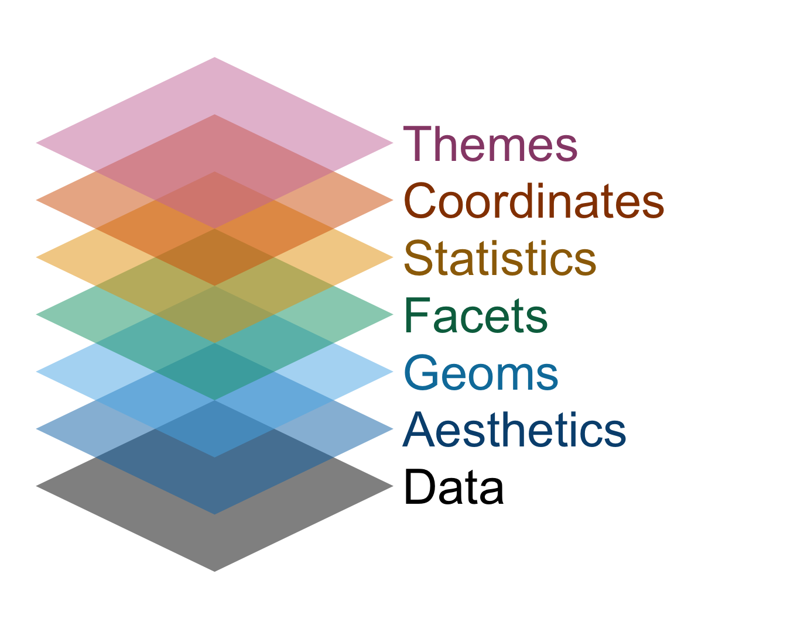

Grammar of data visualization
Lecture 2
Warm-up
Announcements
Office hours are posted on the course website!
-
If you can follow along with today’s application exercise steps, great! If something doesn’t work as expected, ask me/TA during the exercise. We’ll either:
- help you on the spot and get you unstuck or
- identify that you’re missing an earlier step, ask you to follow along with your neighbor, and visit office hours before Thursday for one-on-one help
Outline
-
Last time:
We introduced you to the course toolkit.
You cloned your
aerepositories and started making some updates in your Quarto documents.You did not commit and push your changes back.
. . .
-
Today:
You will commit your changes from last time and push them to wrap up that application exercise.
We will introduce data visualization.
You will pull to get today’s application exercise file.
You will work on the new application exercise on data visualization, commit your changes, and push them.
From last time
ae-01-meet-the-penguins
Go to RStudio, confirm that you’re in the ae project, and open the document ae-01-meet-the-penguins.qmd.
Tour recap: Quarto

Tour recap: Git + GitHub
Once we made changes to our Quarto document, we
went to the Git pane in RStudio
staged our changes by clicking the checkboxes next to the relevant files
committed our changes with an informative commit message
-
pushed our changes to our application exercise repos
- if this failed, we pulled first to get the new application exercise files, and then pushed
confirmed on GitHub that we could see our changes pushed from RStudio
How will we use Quarto?
- Every application exercise, lab, project, etc. is an Quarto document
- You’ll always have a template Quarto document to start with
- The amount of scaffolding in the template will decrease over the semester
What’s with all the hexes?

We have hexes too!
Grab one before you leave!

Data visualization
UN Votes
Remember this visualization from the first day of class?

Let’ see…
how the sausage is made!
Load packages
Prepare the data
us_uk_tr_votes <- un_votes |>
inner_join(un_roll_calls, by = "rcid") |>
inner_join(un_roll_call_issues, by = "rcid", relationship = "many-to-many") |>
filter(country %in% c("United Kingdom", "United States", "Turkey")) |>
mutate(year = year(date)) |>
group_by(country, year, issue) |>
summarize(percent_yes = mean(vote == "yes"), .groups = "drop"). . .
Note
Let’s leave these details aside for a bit, we’ll revisit this code at a later point in the semester. For now, let’s agree that we need to do some “data wrangling” to get the data into the right format for the plot we want to create. Just note that we called the data frame we’ll visualize us_uk_tr_votes.
Visualize the data
ggplot(
us_uk_tr_votes,
mapping = aes(x = year, y = percent_yes, color = country)
) +
geom_point(alpha = 0.5) +
geom_smooth(se = FALSE) +
facet_wrap(~issue) +
scale_color_colorblind() +
labs(
x = "Year",
y = "% yes",
color = "Country"
) +
theme_minimal()
Step 1. Prepare a canvas for plotting
Step 2. Map variables to aesthetics
Map year to the x aesthetic
Step 3. Map variables to aesthetics
Map percent_yes to the y aesthetic
Mapping and aesthetics
Aesthetics are visual properties of a plot
In the grammar of graphics, variables from the data frame are mapped to aesthetics

Argument names
It’s common practice in R to omit the names of first two arguments of a function:
. . .
- Instead of
- Use
Step 4. Represent data on your canvas
with a geom
Step 5. Map variables to aesthetics
Map country to the color aesthetic
Step 6. Represent data on your canvas
with another geom
Warnings and messages
- Adding
geom_smooth()resulted in the following warning:
`geom_smooth()` using method = 'loess' and formula = 'y ~ x'. . .
- It tells us the type of smoothing ggplot2 does under the hood when drawing the smooth curves that represent trends for each country.
. . .
- Going forward we’ll suppress this warning to save some space.
Step 7. Split plot into facets
Step 8. Use a different color scale
Step 10. Apply a different theme
Step 11. Add labels
Step 12. Set transparency of points
with alpha
Step 13. Hide standard errors of curves
with se = FALSE
Grammar of graphics
We built a plot layer-by-layer
- just like described in the book The Grammar of Graphics and
- implemented in the ggplot2 package, the data visualization package of the tidyverse.


Application exercise
ae-02-bechdel-dataviz
- Go to your
aeproject in RStudio. - Make sure all of your changes up to this point are committed and pushed, i.e., there’s nothing left in your Git pane.
- If you haven’t yet done so, click Pull to get today’s application exercise file.
- Work through the application exercise in class, and render, commit, and push your edits by the end of class.
Recap
- Construct plots with
ggplot(). - Layers of ggplots are separated by
+s. - The formula is (almost) always as follows: